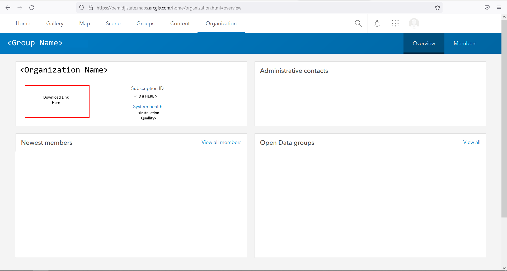
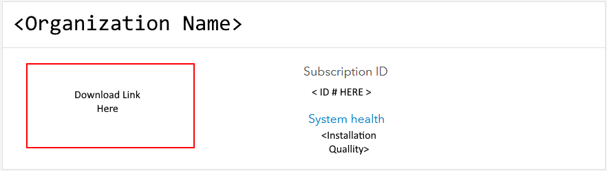
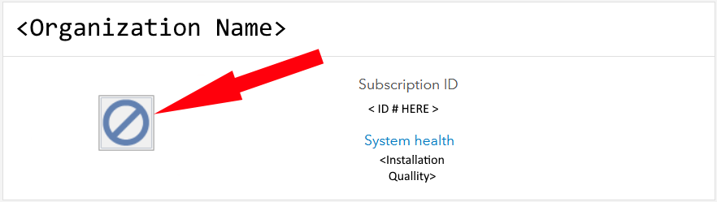

You will need some type of commercial software to work with Geo databases (.GDBs) There are free resources linked at the bottom of this page however, for our purposes this tutorial will cover Esri's ArcGIS Pro (The leading technology any private organization you work for would mostlikely use.)
Before installing any Esri products you Must have the required microsft framework (The Patches required to run Esri products are not currently available for Mac) Direct Link Here:
(Raw_URL)https://dotnet.microsoft.com/en-us/download/dotnet/thank-you/runtime-desktop-6.0.6-windows-x64-installer
Because ArcGIS Pro is an industry standard most businesses and universities (Not including the Forest/Park Serivce, and affiliated technical colleges) will provide you with credentials and a license. Esri's ArcGIS Pro. Once authorized you will have access to download ArcGIS Pro from: This Link
After patching your machine with the link above and Logging in to your ArcGis Account, go to the provided (Link ) and open the Organization tab of the website.

You should see icons for the Esri Software you (or your organization) has purchased.

If you do not have access to any software you will see this icon.
